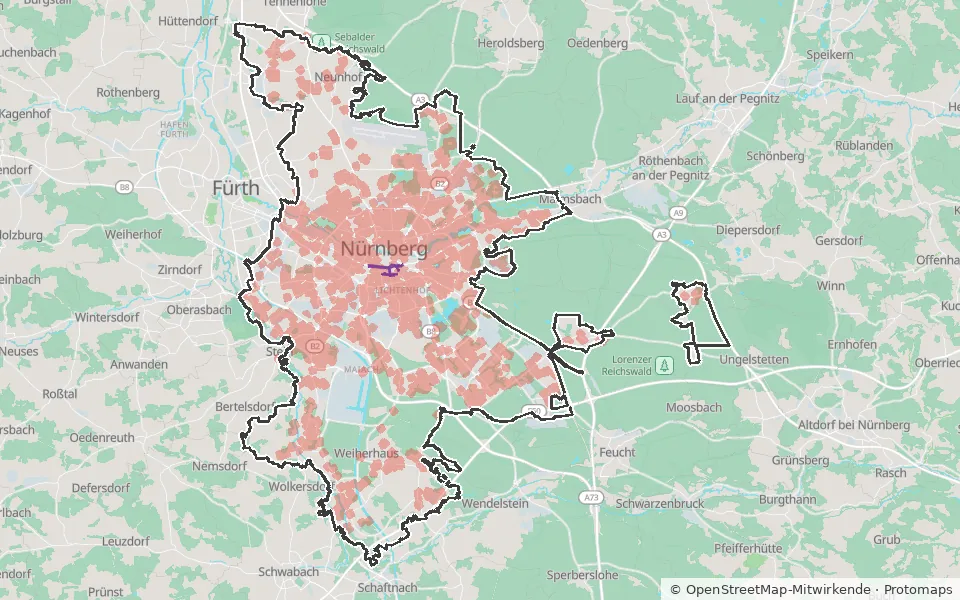
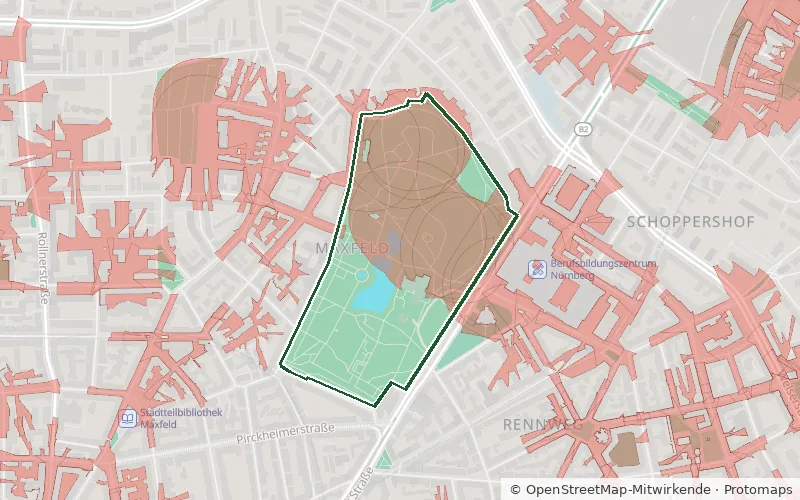
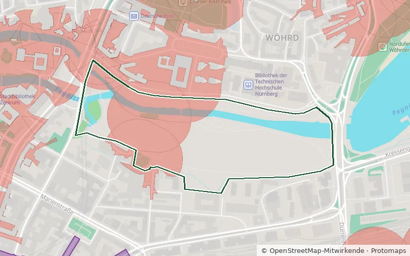
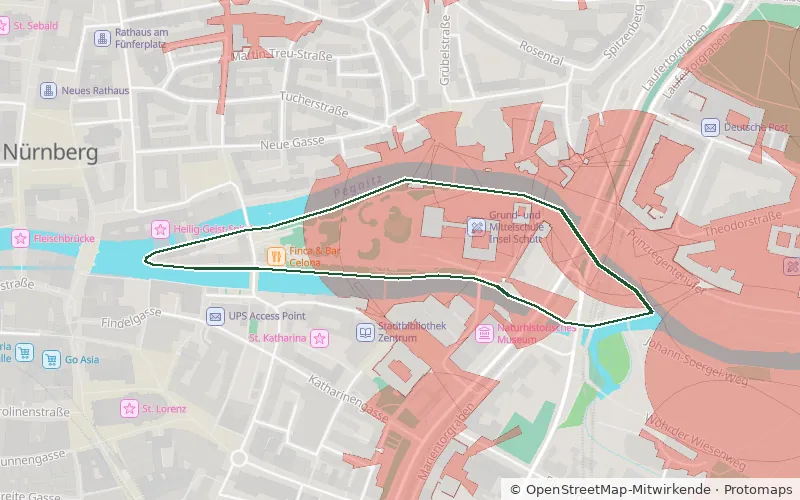
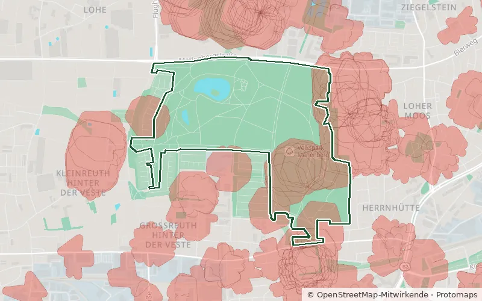
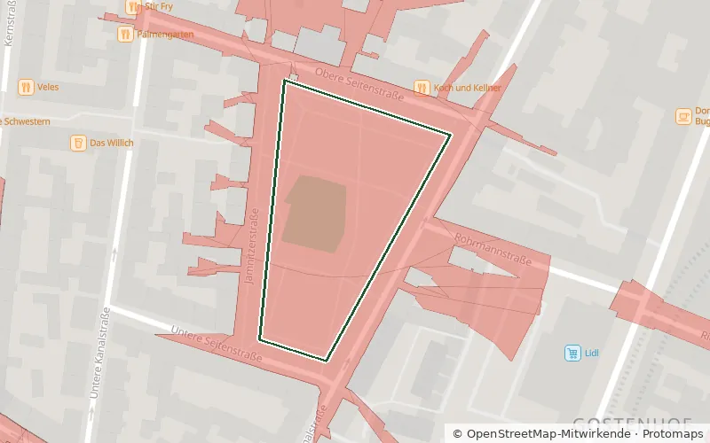
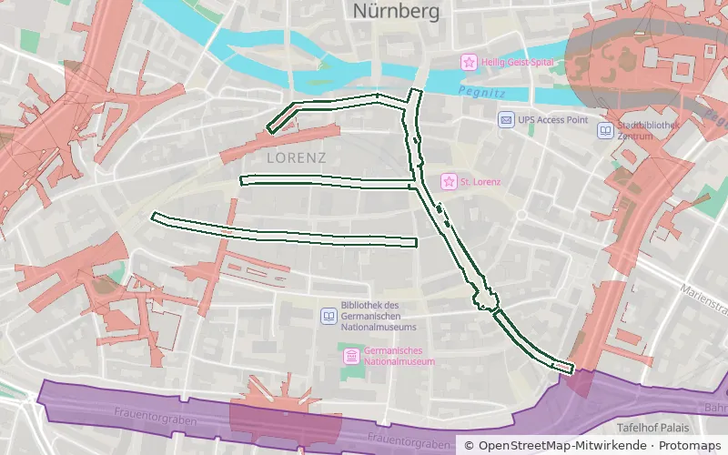

In Nürnberg ist öffentliches Kiffen auf 32 km² verboten, das sind 17,1 % der Stadtfläche von 187 km². Grund sind 1 994 Einrichtungen wie Schulen und Spielplätze: In ihrer Sichtweite, bis 100 Meter vom Eingang und ohne Gebäude dazwischen, verbietet § 5 KCanG den Konsum. Dazu kommen die Fußgängerzonen der Altstadt von 7 bis 20 Uhr, die Verbotszone der Stadt am Hauptbahnhof und überall die Gegenwart von Minderjährigen.
In Bayern kommen Verbote nach Landesrecht hinzu, die die Karte nicht zeigt: Gerauchtes Cannabis ist auch in Biergärten, auf Volksfesten und auf dem Gelände von Spielplätzen, Schulen und Kitas verboten (siehe Landesrecht in Bayern).

Woher die Zonen kommen
| Einrichtung | Anzahl | Zonenfläche |
|---|---|---|
| Schulen | 148 | 6,9 km² |
| Kitas und Kindergärten | 321 | 6,5 km² |
| Kindertagespflege | 13 | 0,3 km² |
| Spielplätze | 489 | 9,8 km² |
| Kinder- und Jugendeinrichtungen | 29 | 0,5 km² |
| Sportstätten | 994 | 16,8 km² |
Jede Art für sich gezählt, Überlappungen also mehrfach. Anbauvereinigungen nur, soweit in OpenStreetMap eingetragen.
Die meisten Zonen gehen auf die 994 Sportstätten zurück, danach auf die 489 Spielplätze.
Die Stadt zählt selbst mit: 2025 gingen Anzeigen wegen Kiffens in Verbotszonen vor allem an Spielplätzen (23) und Sportstätten (9) ein, dazu acht in Gegenwart von Minderjährigen und drei in der Fußgängerzone; nach dem Cannabisgesetz ergingen 138 Bußgeldbescheide (Sicherheitsbericht 2025). Eine Anbauvereinigung mit Erlaubnis gibt es in Nürnberg laut demselben Bericht nicht.
Verbotszone am Hauptbahnhof
Seit Dezember 2025 sind Konsum und Mitführen von Cannabis zum Konsum vor Ort rund um den Hauptbahnhof rund um die Uhr verboten: auf dem Bahnhofsplatz bis zur Bahnhofstraße, am Busbahnhof, im Frauentorgraben zwischen Sterntor und Königstor, auf dem Nelson-Mandela-Platz, im Südstadtpark, am Celtisplatz, in der Königstorpassage und in den Unterführungen. Das kostet bis zu 1.000 Euro; die Verordnung gilt bis Ende 2028 (Verordnung, Stadt Nürnberg). Die Karte zeigt die Zone lila. Nach § 5 KCanG allein lägen vom Nelson-Mandela-Platz 84 % in einer Zone.
Parks und Pegnitz
Im Stadtpark liegen 55 % der Fläche in einer Zone: Vier Sportanlagen, zwei Spielplätze und eine Kita liegen im Park. Auf der Wöhrder Wiese an der Pegnitz sind es 35 %, um zwei Spielplätze; der Wöhrder See liegt zu 32 % in einer Zone, vor allem am Ufer, an dem zwei Dutzend Sportanlagen und zwölf Spielplätze liegen.


Auf der Insel Schütt mit Schule und Spielplatz sind es 72 %, im Kontumazgarten 71 %. Im Volkspark Marienberg liegen 26 % in einer Zone, um neun Sportanlagen im Park, im Volkspark Dutzendteich 12 %. Im Burggarten der Kaiserburg sind es 15 %; eine Regel zu Rauchen oder Cannabis haben die Vorschriften der Schlösserverwaltung dort nicht (Anlagenvorschriften).


Ganz in einer Zone liegt der Jamnitzerplatz in Gostenhof (100 %), mit Spielplatz und Basketballfeld; die Stadt beschreibt dort Kiffen im Laubengang (Sicherheitsbericht, oben). Auf einem 100 Meter breiten Streifen Land entlang der Pegnitz liegen 26 % in einer Zone.

In den städtischen Grünanlagen ist außerdem verboten, sich zum Alkoholtrinken aufzuhalten, und auf Spielplätzen, Tabak zu rauchen; zu Cannabis sagt die Grünanlagensatzung nichts (Grünanlagensatzung).
Altstadt
Eine Liste der Nürnberger Fußgängerzonen gibt es nicht, aber eine Karte des Verkehrsplanungsamts von 2023: Fußgängerzone sind danach unter anderem die Königstraße vom Königstor bis zum Hauptmarkt, Hauptmarkt, Breite Gasse, Karolinenstraße, Kaiserstraße, Ludwigsplatz, Lorenzer Platz und Weinmarkt; der Albrecht-Dürer-Platz ist verkehrsberuhigter Bereich, keine Fußgängerzone (Karte der Stadt). Dort gilt von 7 bis 20 Uhr Konsumverbot; blau sind die Fußgängerbereiche aus OpenStreetMap.
Von Königstraße, Karolinenstraße, Breiter Gasse und Kaiserstraße liegen außerdem 6 % in einer Sichtweiten-Zone. Hauptmarkt (0 %) und Lorenzer Platz (0 %) liegen außerhalb der Zonen, der Aufseßplatz in der Südstadt zu 79 %.

Der Christkindlesmarkt auf dem Hauptmarkt ist rechtlich ein Spezialmarkt, kein Volksfest; ob das Rauchverbot für Volksfeste dort gilt, ist offen. Er liegt aber in der Fußgängerzone, und Kinder sind überall.
Hochschulen und Stadion
Hochschulen sind nach § 5 KCanG keine Verbotsorte. Das Gelände der Technischen Hochschule am Keßlerplatz liegt zu 3 % in einer Zone. Die Technische Universität Nürnberg verbietet Cannabis ausdrücklich in ihren Gebäuden, auf Dachterrassen und in Innenhöfen (Liegenschaftsordnung); die Hausordnung der FAU verbietet das Rauchen in Räumen. Die Stadionordnung des 1. FC Nürnberg nennt Cannabis nicht; das Stadion ist als Sportstätte ohnehin eine Verbotszone.
Was sonst noch gilt
Bayern hat feste Bußgelder: Konsum in einer Verbotszone nach § 5 KCanG, auch in der Fußgängerzone, kostet 500 Euro, in Gegenwart von Kindern und Jugendlichen 1.000 Euro (Bußgeldkatalog Bayern). Das bayerische Gesundheitsschutzgesetz verbietet außerdem, Cannabis zu rauchen, zu erhitzen oder zu verdampfen: in Biergärten und auf den Terrassen von Gaststätten, auf Volksfesten wie dem Nürnberger Volksfest, auf dem Gelände von Spielplätzen, Schulen und Kitas, bis zu 1.500 Euro (Gesundheitsschutzgesetz). Zuständig ist die Stadt. Weitere Verbotszonen der Stadt außer der am Hauptbahnhof gibt es nicht (Stand 27. November 2026).
Häufige Fragen
Wo darf man in Nürnberg kiffen?
Nach § 5 KCanG außerhalb der roten Flächen, etwa in weiten Teilen des Volksparks Dutzendteich (12 % in einer Zone). Nicht in der lila Zone am Hauptbahnhof, tagsüber nicht in den Fußgängerzonen der Altstadt, nie in Gegenwart von Minderjährigen, gerauchtes Cannabis außerdem nicht in Biergärten und auf Volksfesten. Weiß heißt nicht sicher erlaubt: Hecken, Bäume und fehlende Einrichtungen kennt die Karte nicht.
Darf man am Hauptbahnhof kiffen?
Nein. In der Verbotszone der Stadt ist Cannabis rund um die Uhr verboten, auch für Patientinnen und Patienten, und schon das Mitführen zum Konsum vor Ort.
Wie genau ist das?
Täglich aus OpenStreetMap gerechnet, mit Gebäuden als Sichthindernis; die Zahlen hier sind vom 27. November 2026. Eine Orientierungshilfe, keine Rechtsauskunft (wie gerechnet wird).
Fehlt eine Einrichtung? Korrekturen in OpenStreetMap stehen am Tag darauf auf der Karte; bitte nur eintragen, was es vor Ort gibt.